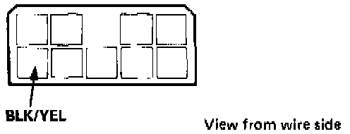
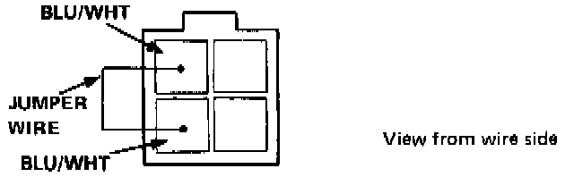
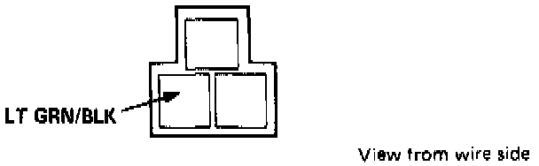
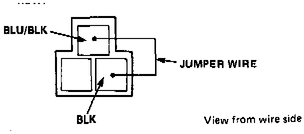

Blower Motor Only Runs at "Hi" Speed
HEATER ELECTRICAL TROUBLESHOOTINGNOTE:
- Use the digital Multimeter KS-AHM-32-O03 to check.
- Before testing, check the No. 22, 24 and 26 fuses (engine compartment) and No. 16 fuse (under dash fuse box). All tests for voltage or motor operation are with the Ignition ON. If components check OK, the problem is in the wiring.
Symptom: Blower motor runs properly at Hi, but won't run at any lower speed, or runs Hi at all speed settings.

1. Check for battery voltage at the BLK/YEL wire of the function control panel connector.

2. Check the [1][2]blower motor relay by attaching a jumper wire between its BLU/WHT and BLU/WHT terminals. If the motor now runs properly, replace the relay.

3. Check the blower motor rheostat (speed control) with a voltmeter at the LT GRN/BLK terminal of the connector from the power transistor. Voltage should be above 9 V as you turn the speed control dial to Lo or Hi.

4. Check the power transistor by attaching a jumper wire between the BLU/BLK and BLK terminals of its connector. If the motor runs, replace the transistor. If you replace it the transistor must be installed properly, so that it is kept cool by the blower's air flow.